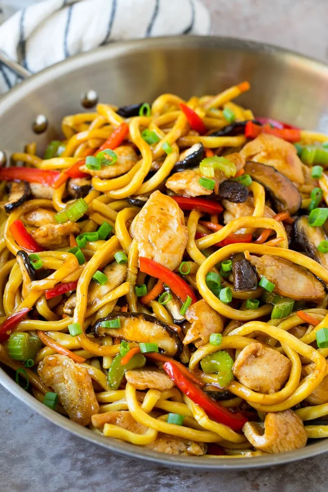

STIR-FRY NOODLES

DESCRIPTION
This dish is quick, colorful, and full of texture. The noodles soak up a
savory soy-based sauce, while the chicken adds protein and flavor. Crunchy
stir-fried vegetables like carrots, bell peppers, and cabbage bring
freshness and a slight sweetness. It’s a perfect balance of chewy noodles,
tender chicken, and crisp veggies all tossed in a glossy sauce.
INGREDIENTS
- 2 packs of noodles(Indomie, spaghetti, or Chinese egg noodles)
- 1 chicken breast(sliced thin)
- 1 cup mixed vegetables(carrot, cabbage, green beans, bell peppers)
- 2 tbsp soy sauce
- 1 tbsp oyster sauce(optional)
- 2 cloves garlic(chopped)
- 2 tbsp vegetable oil
- 1 tbsp chili flakes(optional)
STEPS
- Boil noodles halfway (do not overcook), drain, and set aside.
- Heat oil in a wok/pan, add garlic and stir-fry chicken until golden.
- Add vegetables, stir-fry for 2-3 minutes.
- Add soy sauce, oyster sauce, and chili flakes.
- Toss in noodles, mix well for 2 minutes.
- Serve hot!
Home